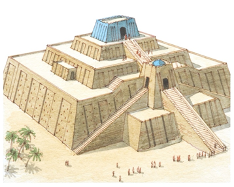
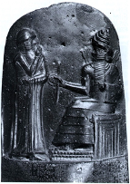

Mesopotamia
Mesopotamia was located in where today’s Iraq, Iran, Syria, and Kuwait are. There are many deserts in Mesopotamia. There are also multiple seas around and many rivers that run through it. Mesopotamia means that land between rivers. This is because meso is the Greek word for middle or between, and potamaos is the word for river. The seas, rivers, and desserts in Mesopotamia provided their resources. The desert provided clay that was used to make pottery and tools. The rivers provided fresh water for their crops. These crops include, barley, wheat, flax, dates, figs, and grapes. Barley and wheat were used to make beer. Flax was used to make oil and linen. The animals in Mesopotamia were goats, sheep, and donkeys. Goats and sheep were used for milk, meat, leather, and wool. Donkeys were used for transportation. The seas provided a way for them to travel to other countries, like India, to collect other resources, such as textiles, leather, stones for jewelry, copper, pearl, and ivory.

The Seven Tablets of Creation, also known as the Enuma Elish shows the Mesopotamian creation story. In the Enuma Elish, the earth started out as just water that was in chaos. The water separated by swirling into two types of water, fresh water and saltwater. The god Aspu was the god of the fresh water, and his wife Tiamat was the goddess of the saltwater. Aspu and Tiamat create the younger gods. The younger gods they created are too loud making it so Apsu cannot sleep, so he wants to destroy them. At first Tiamat was not on board with the idea. She changes her mind after Apsu is killed by their oldest son Ea. She then creates monsters and makes Quingu the leader of her army. Tiamat is killed by Marduk, who is the son of the god Ansar, a champion of war, and god of thunderstorms. Marduk shoots an arrow though Tiamat splitting her in half. Tiamat’s two halves make the Heavens and the Earth. Her tears make the two rivers in Mesopotamia, Tigris and Euphrates. After Marduk kills Tiamat, Quingu is captured and brought to Ea. The gods tell him, "Quingu is the one who instigated warfare, who made Tiamat rebel and set battle in motion" (Enuma Elish, Tablet VI, lines 29-30). Quingu is then punished by having his blood vessels cut off. Ea then takes Quingu’s blood to create humans.
The Mesopotamians believed that everything they do revolves around keeping the earth from going into chaos and being close to the gods. They prevented chaos by providing for their gods. They did this by housing them in temples and having priest, sing to, wash, clothe, entertained, burn incense, provide a meal for them. On certain days of the year the gods where taken out of their temple and walked around the city. They did this so the gods can inspect the city and see how it is doing.
The Mesopotamians created the first form of writing. The writing was called Cuneiform. The Epic of Gilgamesh, which is a Mesopotamian story about the king Gilgamesh’s growth journey, was written in Cuneiform. The Latin word cuneus means wedge. Cuneiform has a wedge like shape, in other words it consisted of slashes that are a skinny triangle shape. Cuneiform is also seen on the Stele of Hammurabi.
The Mesopotamian culture does not directly relate to my major, computer science with a minor in graphic design. They did make one of the first forms of writing which is used in my major.
Artwork
Ziggurat:
A Ziggurat is a Mesopotamian temple. They are made of mud brick that had been sun baked. They are not as strong as Egyptian pyramids. The Mesopotamians built ziggurats from 3000 BC to 300 BC. Ziggurats have four levels with stairs leading up to them. The temple was a tower that was meant to bring the people closer to the gods. The many levels are a symbol of that. The fourth level is where the people of Mesopotamia would bring their crops they had collected. The crops would be rationed out to the Mesopotamian people. The fourth level was also where they could get the closest to the gods.
Stele of Hammurabi:
The Stele of Hammurabi was the written law for Mesopotamia. It was made when Hammurabi was king, so around 1792-1750 BC. That was the time of the Babylonians. It was located in a city called Susa. The picture above shows Hammurabi, a king of Mesopotamia, and Shamash, the god of justice. Hammurabi is holding his hand over his mouth as a sign of prayer. The rod in Shamash hand represents the law that is being given to Hammurabi. What Marduk is sitting on symbolizes temples. What his feet are on symbolizes ziggurats. The Stele of Hammurabi was important to the Mesopotamian culture because it provided their law. Some of these laws include if you steal an ox you must pay 30 times more and if a doctor killed a wealthy patient their hands would be cut off.